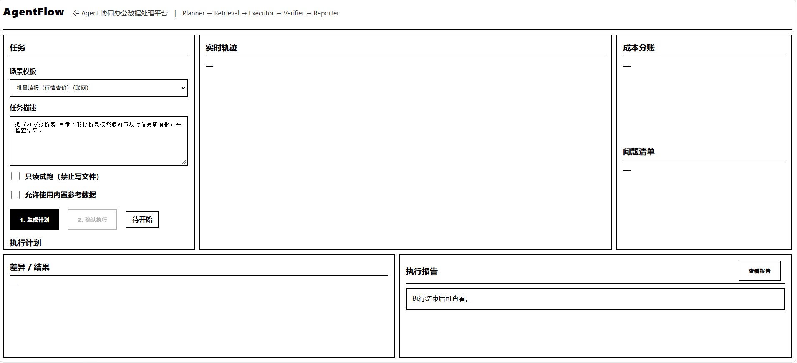
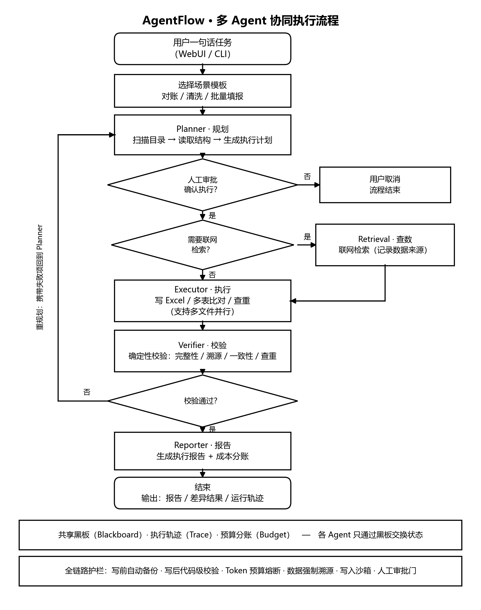

01
AgentFlow：基于多Agent协同的Excel智能数据处理系统
多 Agent · MCP
项目简介
把一句话办公需求变成可校验、可追溯、可控成本的自动化执行。针对单 Agent 处理办公表格时职责混淆、易编造数据、成本不可控的问题，设计多 Agent 协同平台，覆盖多表核对 / 对账、批量填报、数据清洗三类场景，实现从规划、查数、执行、校验到报告的自动化闭环。
项目背景
办公场景中大量表格任务（对账、批量填报、数据清洗）属于高频重复劳动；单 Agent 方案把规划、写表、校验混在一个循环里，出错难定位、幻觉难兜底、token 成本不可控。
问题定义
1）职责混淆：规划 / 查数 / 执行 / 校验耦合，出错难定位；2）幻觉叠加：模型既当运动员又当裁判，写了错值没人纠；3）成本失控：所有决策都走 LLM，token 消耗不可控。
解决方案
以「LLM 只做决策、代码守底线」为原则：用自研 Orchestrator 状态机调度 5 个职责隔离 Agent（Planner / Retrieval / Executor / Verifier / Reporter），Agent 间通过共享黑板（Blackboard）串行协作。关键设计是把校验判定用确定性代码写死（Verifier 不调用大模型），堵死多 Agent 互相放大幻觉；配套全局 Token 预算熔断、数据强制溯源（查不到标 not_found、绝不编造）、写前自动备份、写后代码级校验、人工审批门与确定性兜底。引擎与场景解耦，换场景只改一个 JSON。
技术实现
PythonDeepSeek APIFunction CallingMCP 协议多 Agent 协同状态机编排共享黑板Flaskopenpyxl
项目亮点
- 用确定性校验替代"让模型自证正确"：结论由代码背书而非模型自评，可信度可复现
- 真实评测：多表核对任务在正确率持平（3/3）的前提下，tokens 较单 Agent 基线降低 64%（29,344 vs 81,429）
- 全链路护栏：Token 预算熔断 + 成本分账、数据强制溯源、写前备份、校验失败自动带反馈重规划
- 自研轻量状态机而非套用框架：可控、可观测、可回放（黑板 + 轨迹 + 报告全量落盘）
- v2.1 支持多文件并行：17 张报价表 2.07s → 1.22s，约 1.7x 提速
项目价值
把"大模型能填表"推进到"多 Agent 协同 + 结果可信 + 成本可控"，形成可复用的通用引擎，同一套引擎适配不同客户场景。
个人贡献
独立完成 Orchestrator 状态机与 5 个职责隔离 Agent 的架构设计与开发；实现共享黑板协作、确定性校验规则库、Token 预算与成本分账、全链路护栏与多文件并行执行；以 v1 单 Agent 版为基线完成 A/B 评测。


PRD 摘要（产品需求文档.pdf）
文档包含项目背景、用户角色、功能需求（任务规划 / 查数 / 批量填报 / 确定性校验 / 报告）、非功能性需求与验收标准。核心链路：用户一句话 → Orchestrator 状态机 → Planner → Retrieval → Executor → Verifier → Reporter 五个 Agent 经共享黑板协作 → 写前备份 + 写后确定性校验 → 报告落盘。
⬇ 下载产品需求文档（PDF）